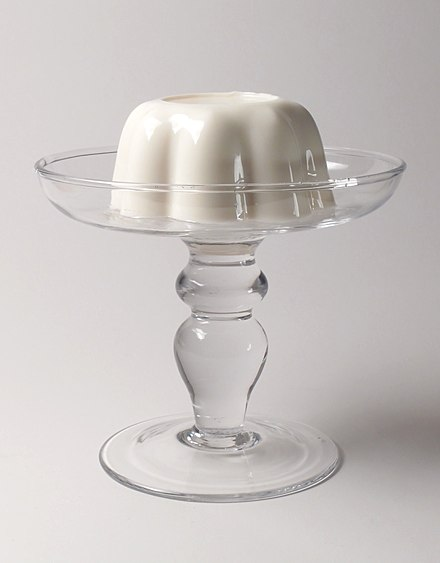

Pudding

Description
Pudding is a type of food. It can be either a dessert or a savoury (salty or spicy) dish served as part of the main meal.
In the United States, pudding means a sweet, milk-based dessert similar in consistency to egg-based custards,
instant custards or a mousse, often commercially set using cornstarch, gelatin or similar coagulating agent such as Jell-O.
Ingredients
- 1/3 cup sugar
- 2 tablespoons cornstarch
- 1/8 teaspoon salt
- 2 cups milk
- 2 large egg yolks, slightly beaten
- 2 tablespoons butter, softened
- 2 teaspoons vanilla
Instructions
- In 2-quart saucepan, mix sugar, cornstarch and salt. Gradually stir in milk. Cook over
medium heat, stirring constantly, until mixture thickens and boils. Boil and stir 1 minute.
- Gradually stir at least half of the hot mixture into egg yolks, then stir back into hot mixture in saucepan.
Boil and stir 1 minute; remove from heat. Stir in butter and vanilla.
- Pour pudding into dessert dishes. Cover and refrigerate about 1 hour or until chilled.
Store covered in refrigerator.